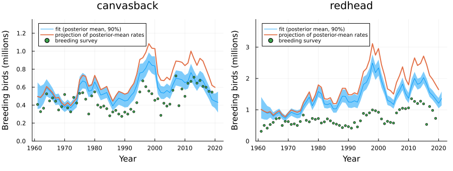
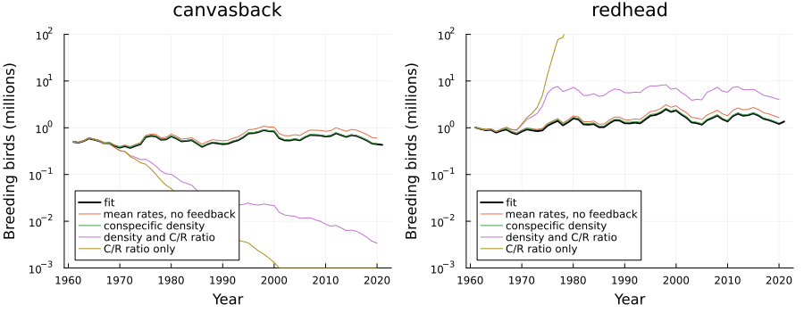

Canvasbacks and redheads: two interacting diving ducks
Simon Frost
- The model
- Data
- Two species as nets
- Agreement with the authors’ process equations
- Posterior-mean rates are not the posterior-mean trajectory
- Published values
- The transient LTRE
- Closing the loop: an extension
- What matches and what does not
ENV["GKSwstype"] = "100"
using MatrixCommunityModels
using LinearAlgebra, Printf, Statistics
using PlotsThe model
Canvasbacks (Aythya valisineria) and redheads (A. americana) breed on the ponds of the Prairie Pothole Region. Redheads often lay eggs in canvasback nests (brood parasitism). Gibson, Arnold, Buderman & Koons (2025, Ecological Monographs 95:e1642) fitted an integrated population model to 61 years (1961–2021) of the two species’ data: band recoveries, the age and sex of the harvest, harvest totals and the May breeding survey. They then used a transient life table response experiment (tLTRE) to ask which vital rates drove each species’ growth. The fitting is Bayesian (NIMBLE) and is not repeated here. This vignette rebuilds the process model, the yearly projection inside the fit, runs it on the authors’ posterior estimates and checks it against their code and published numbers. An extension then closes the loop between the two species, which the published fit does not do.
Each species is counted in May in four classes: breeding yearlings (second-year, SY) and older birds (ASY) of each sex. With fecundity $F_t$ (ducklings of both sexes per older female), the breeding success $\omega$ of a yearling female relative to an older one, natural winter survival $S^W$, harvest probability $\kappa$ and natural summer survival $S^S$, one year of the authors’ code (IPM_code.R) is
\[\begin{aligned} N^{SY}_{F,t+1} &= \tfrac12 F_t\,(N^{ASY}_{F,t} + \omega N^{SY}_{F,t})\; S^W_{HY,F,t}\,(1-\kappa_{HY,F,t})\,\sqrt{S^S_{F,t+1}},\\ N^{ASY}_{F,t+1} &= \sqrt{S^S_{F,t}}\; S^W_{AHY,F,t}\,(1-\kappa_{AHY,F,t})^{r}\,\sqrt{S^S_{F,t+1}}\;(N^{SY}_{F,t} + N^{ASY}_{F,t}), \end{aligned}\]
and the same for males, who receive the other half of the ducklings. Summer survival is split: half of it falls after the breeding survey and half before the next one. The exponent $r = e^{\beta_{indirect}}$ turns the harvest hazard of adults banded before the season into the hazard of adults in later years.
The fitted model draws each yearly rate from a regression on covariates: pond numbers, cropland, winter habitat, sea temperature, climate, bag limits, conspecific densities, and the ratio of breeding female canvasbacks to redheads, the index of parasitism. Every density, and that ratio, entered the fit as data with uncertainty, not as the projected numbers. The code even keeps, commented out, the lines that had computed them from the latent state. So in the published model the two species do not interact through the projection. They are linked by the ratio covariate and by correlated yearly random effects, and their yearly rates already carry those effects. In the code each species’ density terms use only its own density; the only cross-species term is the ratio.
Data
The authors deposited 8000 posterior draws of the yearly rates and abundances on Dryad (doi:10.5061/dryad.hqbzkh1n9, CC0) and their code on Zenodo (doi:10.5281/zenodo.8076163, MIT). test/reference/R/run_waterfowl_reference.R reduces the draws to the posterior means shipped in data/waterfowl. The 115 MB file of draws is not shipped.
The draws do not store two constants that the projection needs: $\omega$ (the stored bp has 500 000 columns and is not aligned with the 8000 draws) and $r$. The script recovers both for each draw from the draw’s own abundances in 1961 and 1962. $r$ comes out the same from females and from males to 5e-14, which confirms that one $\beta_{indirect}$ serves both sexes. Their posterior means:
p = WATERFOWL_GIBSON_2025
(omega = p.omega, indirect_harvest = p.indirect_harvest)(omega = (canvasback = 0.8085100695274856, redhead = 0.7994228522333219), indirect_harvest = (canvasback = 0.8025855447107395, redhead = 0.959698659927432))\[\omega\]
is 0.81 for canvasbacks and 0.80 for redheads, as printed in Appendix S1, Table S3. Both are close to the prior mean of 0.8. Adults of both species are harvested less in the years after they are banded than in the year they are banded ($r < 1$), canvasbacks markedly so.
Two species as nets
waterfowl_duck builds each species as a net with stages sy_female, asy_female, sy_male, asy_male and four transitions. The two recruitment transitions are marked as births and carry $\tfrac12\omega$ and $\tfrac12$. Their responses multiply in the year’s fecundity and first-year survival, read from the environment of the step. The two survival transitions carry the adult survival of each sex. waterfowl_environment gives one environment per step, from May 1961 to May 2020: the rates of both species that year and next year’s summer survival.
m = waterfowl_community()
env = waterfowl_environment()
(species = species_names(m.community), pools = pool_names(m.community),
transitions = transition_names(system(m.community)[:canvasback]), steps = length(env),
first_step = env[1].canvasback)(species = [:canvasback, :redhead], pools = Symbol[], transitions = [:female_recruitment, :female_survival, :male_recruitment, :male_survival], steps = 59, first_step = (fecundity = 0.9750888227286926, sw_hy_f = 0.7267441092655781, sw_ahy_f = 0.9012387254243356, sw_hy_m = 0.6928727124887578, sw_ahy_m = 0.946250224281848, kappa_hy_f = 0.06590693536345289, kappa_ahy_f = 0.024331929079079325, kappa_hy_m = 0.0590068762839578, kappa_ahy_m = 0.01868548837639452, ss_f = 0.8154211469753458, ss_m = 0.8722214336638043, ss_f_next = 0.8108030420362173, ss_m_next = 0.8222839022634651))The published model has no pools: each species’ rates are given year by year.
Agreement with the authors’ process equations
The reference script reads the lines of IPM_code.R that define the ducklings and the breeding numbers and evaluates them as they stand. It does so at the posterior means, for three single draws, and with the feedback extension below. The package’s projection matches all of them to rounding. For the single draws it also matches the abundances that the authors stored with the draw:
ref = joinpath(pkgdir(MatrixCommunityModels), "test", "reference")
rows = [split(l, ",") for l in readlines(joinpath(ref, "waterfowl_projection.csv"))[2:end]]
table(label) = permutedims(reduce(hcat, [parse.(Float64, r[4:7]) for r in rows if r[1] == label]))
both(sol) = vcat(sol[:canvasback], sol[:redhead])
relerr(a, b) = maximum(abs.(a ./ b .- 1))
sol = project(m.community, m.n0, env)
dh = Symbol.(split(readline(joinpath(ref, "waterfowl_draws.csv")), ","))
drows = [split(l, ",") for l in readlines(joinpath(ref, "waterfowl_draws.csv"))[2:end]]
function draw_parameters(j)
dj = [r for r in drows if r[1] == j]
constant(sp, name) = parse(Float64, first(r for r in dj if r[2] == sp)[findfirst(==(name), dh)])
stored = table("stored_$j")
merge(p, (rates = MatrixCommunityModels._waterfowl_rates(dh, dj),
omega = (canvasback = constant("canvasback", :omega), redhead = constant("redhead", :omega)),
indirect_harvest = (canvasback = constant("canvasback", :indirect_harvest),
redhead = constant("redhead", :indirect_harvest)),
n0 = (canvasback = stored[1, :], redhead = stored[61, :])))
end
checks = ["posterior means vs authors' equations" => relerr(both(sol), table("posterior_mean"))]
for j in ("1", "4000", "8000")
q = draw_parameters(j); mj = waterfowl_community(q)
s = both(project(mj.community, mj.n0, waterfowl_environment(q)))
push!(checks, "draw $j vs authors' equations" => relerr(s, table("draw_$j")),
"draw $j vs stored abundances" => relerr(s, table("stored_$j")))
end
for (k, v) in checks
@printf("%-40s largest relative difference %.1e\n", k, v)
endposterior means vs authors' equations largest relative difference 4.0e-15
draw 1 vs authors' equations largest relative difference 1.1e-15
draw 1 vs stored abundances largest relative difference 1.8e-14
draw 4000 vs authors' equations largest relative difference 1.8e-15
draw 4000 vs stored abundances largest relative difference 8.7e-15
draw 8000 vs authors' equations largest relative difference 8.9e-16
draw 8000 vs stored abundances largest relative difference 3.4e-14Posterior-mean rates are not the posterior-mean trajectory
Each draw’s rates reproduce that draw’s trajectory exactly. Projecting the posterior means of the rates does not reproduce the posterior means of the trajectories, because a product of means is not a mean of products. Within a draw, rates and starting numbers trade off against each other: the data fix the numbers more tightly than any one rate. Averaging the rates separately loses that trade-off.
fit(sp) = vec(sum(getproperty(p.abundance, sp).n; dims = 2))
proj(sp) = vec(sum(sol[sp]; dims = 2))
for sp in (:canvasback, :redhead)
a, x = fit(sp)[1:60], proj(sp)
@printf("%-10s total in 2020: fit %.3f M, projection of mean rates %.3f M; largest ratio %.2f; growth 1961-2020: fit %.4f, projection %.4f\n",
sp, a[60], x[60], maximum(x ./ a), (a[60] / a[1])^(1 / 59), (x[60] / x[1])^(1 / 59))
endcanvasback total in 2020: fit 0.444 M, projection of mean rates 0.598 M; largest ratio 1.35; growth 1961-2020: fit 0.9981, projection 1.0032
redhead total in 2020: fit 1.208 M, projection of mean rates 1.643 M; largest ratio 1.36; growth 1961-2020: fit 1.0030, projection 1.0083The posterior-mean rates carry the canvasback population up by about 0.3% a year, where the fit has it falling by 0.2% a year. By 2020 both projected populations are about a third (35% and 36%) above the fit. The figure shows the fit (posterior mean, 90% band of the total), the projection of the mean rates and the breeding survey. The survey counts fewer birds than the latent population: the paper estimates that it misses 23% of canvasbacks and 51% of redheads.
yrs = 1961:2021
figs = map((:canvasback, :redhead)) do sp
a = getproperty(p.abundance, sp)
plt = plot(yrs, fit(sp); ribbon = (fit(sp) .- a.total_q05, a.total_q95 .- fit(sp)), label = "fit (posterior mean, 90%)",
title = String(sp), xlabel = "Year", ylabel = "Breeding birds (millions)", legend = :topleft,
legendfontsize = 7, ylims = (0, 1.25 * maximum(proj(sp))))
plot!(plt, 1961:2020, proj(sp); label = "projection of posterior-mean rates", lw = 2)
scatter!(plt, yrs, getproperty(p.covariates.bpop, sp); label = "breeding survey", ms = 2.5)
plt
end
plot(figs...; layout = (1, 2), size = (900, 340))
To get the paper’s trajectories from this model, project each draw and average the results, as the test does for three draws. Only the means are shipped, so the vignettes work with the means. Their limits are visible above.
Published values
Appendix S1 prints 60-year means of the female rates (Table S7). Time averages of the posterior means equal the posterior means of the time averages, so they can be checked at the printed precision. So can the geometric mean growth of the breeding population (the authors’ $\lambda_T$, 1961–2021), which waterfowl_ltre computes from the posterior-mean abundances:
mean60(x) = sum(x) / length(x)
lt = waterfowl_ltre()
printed = (canvasback = (sw_hy = 0.82, sw_ahy = 0.88, sh_hy = 0.81, sh_ahy = 0.92, F = 1.24, λ = 0.998),
redhead = (sw_hy = 0.67, sw_ahy = 0.80, sh_hy = 0.86, sh_ahy = 0.96, F = 1.35, λ = 1.005))
for sp in (:canvasback, :redhead)
r = getproperty(p.rates, sp); t = getproperty(printed, sp)
here = (sw_hy = mean60(r.sw_hy_f), sw_ahy = mean60(r.sw_ahy_f), sh_hy = mean60(1 .- r.kappa_hy_f),
sh_ahy = mean60(1 .- r.kappa_ahy_f), F = mean60(r.fecundity), λ = getproperty(lt, sp).lambda)
for k in keys(t)
d = k === :λ ? 3 : 2
@printf("%-10s %-7s printed %.*f here %.*f %s\n", sp, k, d, t[k], d + 2, here[k],
round(here[k]; digits = d) == t[k] ? "matches" : "DIFFERS")
end
endcanvasback sw_hy printed 0.82 here 0.8169 matches
canvasback sw_ahy printed 0.88 here 0.8769 matches
canvasback sh_hy printed 0.81 here 0.8069 matches
canvasback sh_ahy printed 0.92 here 0.9221 matches
canvasback F printed 1.24 here 1.2386 matches
canvasback λ printed 0.998 here 0.99764 matches
redhead sw_hy printed 0.67 here 0.6749 matches
redhead sw_ahy printed 0.80 here 0.8042 matches
redhead sh_hy printed 0.86 here 0.8599 matches
redhead sh_ahy printed 0.96 here 0.9554 matches
redhead F printed 1.35 here 1.3549 matches
redhead λ printed 1.005 here 1.00496 matchesAll of them agree. The breeding sex ratio (Table S7: 1.46 males per female for canvasbacks, 1.11 for redheads) is matched to within 0.01 by the posterior-mean abundances (1.455 and 1.104).
The transient LTRE
The tLTRE (the paper’s Equation 35) splits the variance of the yearly growth rate among 18 series: the fecundity of yearling and older females; hatch-year and adult winter, summer and harvest survival of each sex; and the proportions of the breeding population in each class. The contribution of a series is the sum, over all series, of their covariance times both sensitivities. The sensitivities are evaluated at the temporal means with the formulas of LTRE_Code.R. waterfowl_ltre transcribes those formulas, including two quirks of the script. First, the adult-survival sensitivities omit the factor $n_{SY}+n_{ASY}$ that a derivative of the script’s $\lambda$ would carry. Second, F1 uses the script’s misaligned bp. The script averages the calculation over the draws. Here it runs once, on the posterior means, and agrees with the script run on the same means (test/reference/waterfowl_ltre.csv) to 1e-15.
That is an approximation of the published tLTRE, not a reproduction. Posterior means vary less from year to year than single draws do, so all contributions shrink, and not all by the same factor. For comparison, the authors’ script was run once on all 8000 draws (39 minutes; not part of the tests). Its averaged contributions, written below as numbers, round to 17 of the 18 values of Table S9 for each species. The two exceptions are male $n_{SY}$ of canvasbacks (−0.00057, printed −0.0005) and male $n_{ASY}$ of redheads (0.00110, printed 0.0010). Both look truncated rather than rounded.
series = lt.canvasback.names
# Table S9 of Appendix S1 (printed), females then males; F only for females
s9 = (canvasback = [0.0015, 0.0038, 0.0001, 0.0009, 0.0003, 0.0018, 0.0011, 0.0020, -0.0002, -0.0001,
0.0008, 0.0023, 0.0004, 0.0021, 0.0015, 0.0020, -0.0005, 0.0014],
redhead = [0.0043, 0.0113, 0.0004, 0.0001, 0.0001, 0.0003, 0.0003, 0.0003, -0.0005, 0.0000,
0.0037, 0.0064, 0.0000, 0.0007, 0.0003, 0.0006, -0.0001, 0.0010])
# the authors' LTRE_Code.R on all 8000 draws (mean contribution over the draws), run once on 2026-11-19
draws = (canvasback = [0.0015315017, 0.0038359101, 0.0001385725, 0.0009121721, 0.0002661623, 0.0017733334,
0.0011169777, 0.0019773091, -0.0002230742, -0.0001248327, 0.0008005684, 0.0022567184,
0.0003634295, 0.0020860579, 0.0014783628, 0.0019764458, -0.0005731560, 0.0014291195],
redhead = [4.331336e-03, 1.127517e-02, 4.384014e-04, 1.450075e-04, 5.733776e-05, 3.117694e-04,
2.636921e-04, 2.802345e-04, -5.061155e-04, -9.099287e-06, 3.678643e-03, 6.423797e-03,
1.912938e-05, 7.064847e-04, 2.884957e-04, 5.867892e-04, -1.177202e-04, 1.102645e-03])
for sp in (:canvasback, :redhead)
c = getproperty(lt, sp).contribution
println(sp, ": draw-wise means round to Table S9 for ", count(round.(getproperty(draws, sp); digits = 4) .==
getproperty(s9, sp)), " of 18 series")
@printf(" %-6s %9s %9s %9s\n", "series", "Table S9", "draws", "means")
for (i, n) in enumerate(series)
@printf(" %-6s %9.4f %9.5f %9.5f\n", n, getproperty(s9, sp)[i], getproperty(draws, sp)[i], c[i])
end
endcanvasback: draw-wise means round to Table S9 for 17 of 18 series
series Table S9 draws means
F1 0.0015 0.00153 0.00117
F2 0.0038 0.00384 0.00293
Sfj_w 0.0001 0.00014 -0.00003
Sfa_w 0.0009 0.00091 0.00025
Sfj_s 0.0003 0.00027 0.00016
Sfa_s 0.0018 0.00177 0.00071
Sfj_h 0.0011 0.00112 0.00107
Sfa_h 0.0020 0.00198 0.00189
nf1 -0.0002 -0.00022 -0.00025
nf2 -0.0001 -0.00012 -0.00002
Smj_w 0.0008 0.00080 0.00022
Sma_w 0.0023 0.00226 0.00081
Smj_s 0.0004 0.00036 0.00029
Sma_s 0.0021 0.00209 0.00118
Smj_h 0.0015 0.00148 0.00143
Sma_h 0.0020 0.00198 0.00191
nm1 -0.0005 -0.00057 -0.00077
nm2 0.0014 0.00143 0.00135
redhead: draw-wise means round to Table S9 for 17 of 18 series
series Table S9 draws means
F1 0.0043 0.00433 0.00391
F2 0.0113 0.01128 0.01018
Sfj_w 0.0004 0.00044 -0.00005
Sfa_w 0.0001 0.00015 -0.00111
Sfj_s 0.0001 0.00006 0.00004
Sfa_s 0.0003 0.00031 0.00007
Sfj_h 0.0003 0.00026 0.00023
Sfa_h 0.0003 0.00028 0.00024
nf1 -0.0005 -0.00051 -0.00049
nf2 0.0000 -0.00001 0.00013
Smj_w 0.0037 0.00368 0.00244
Sma_w 0.0064 0.00642 0.00408
Smj_s 0.0000 0.00002 0.00003
Sma_s 0.0007 0.00071 0.00058
Smj_h 0.0003 0.00029 0.00028
Sma_h 0.0006 0.00059 0.00057
nm1 -0.0001 -0.00012 -0.00042
nm2 0.0010 0.00110 0.00101As shares of the total, fecundity explains 25.8% (canvasbacks) and 53.8% (redheads) of the variance of growth in the authors’ draw-wise calculation; the paper’s text gives 25.5% and 53.6%. For canvasbacks the text gives 18.4% to natural winter, 31% to harvest and 21.7% to summer mortality. For redheads it gives 26.5%, 7.4% and 5.0%, though another passage gives other values for redheads. On the posterior means the shares are:
for sp in (:canvasback, :redhead)
r = getproperty(lt, sp)
share(idx) = sum(r.contribution[idx]) / r.total
@printf("%-10s fecundity %.1f%%, natural winter %.1f%%, harvest %.1f%%, summer %.1f%%, structure %.1f%%\n",
sp, 100share(1:2), 100share([3, 4, 11, 12]), 100share([7, 8, 15, 16]), 100share([5, 6, 13, 14]),
100share([9, 10, 17, 18]))
endcanvasback fecundity 28.7%, natural winter 8.7%, harvest 44.1%, summer 16.3%, structure 2.2%
redhead fecundity 64.8%, natural winter 24.7%, harvest 6.1%, summer 3.3%, structure 1.1%The ranking of the four groups of rates survives the approximation. For canvasbacks it is harvest, fecundity, summer, then winter, as in the paper. For redheads it is fecundity, winter (mostly male), harvest, then summer. The shares themselves do not survive: canvasback harvest rises from 31% to 44% and redhead fecundity from 54% to 65%. Posterior means keep the yearly variation of the rates the data pin down tightly, such as harvest, and smooth away much of the variation of the uncertain ones. The published tLTRE needs the posterior sample.
Closing the loop: an extension
In the published model, the densities and the canvasback-to-redhead ratio that shape fecundity are data. With feedback = true, an extension that is not part of the paper replaces them by the projected numbers. Each species fills a pool of its breeding females (canvasback_females, redhead_females) and reads the other’s. Its fecundity is then multiplied by
\[\exp\!\Big(\beta_N\,\frac{N_{F,t}-\bar N_{F,t}}{s_N} + \beta_{C/R}\,\frac{C_t/R_t-\bar C_t/\bar R_t}{s_{C/R}}\Big),\]
where $\bar N$, $\bar C$, $\bar R$ are the fit’s posterior-mean female numbers that year and $s$ the standard deviations by which the fit standardised the covariates. The slopes are the posterior means printed in Table S6: $\beta_N = -0.12$ (canvasbacks) and $-0.09$ (redheads); $\beta_{C/R} = 0.15$ and $-0.16$, both with credible intervals that span zero. On the fitted trajectory the multiplier is one, so the extension only acts when the projection leaves the fit, which it does here (previous section). In the figure the fit (black) hides the run with conspecific density alone, which follows it closely.
z = (canvasback = 0.0, redhead = 0.0)
variants = ["mean rates, no feedback" => (p, false),
"conspecific density" => (merge(p, (beta_ratio = z,)), true),
"density and C/R ratio" => (p, true),
"C/R ratio only" => (merge(p, (beta_density = z,)), true)]
runs = map(variants) do (label, (q, fb))
mm = waterfowl_community(q; feedback = fb)
label => project(mm.community, mm.n0, env)
end
mf = waterfowl_community(; feedback = true)
println("pools: ", pool_names(mf.community), "; against the R evaluation of the same equations: ",
@sprintf("%.1e", relerr(both(last(runs[3])), table("feedback"))))
for (label, s) in runs
c, r = vec(sum(s[:canvasback]; dims = 2)), vec(sum(s[:redhead]; dims = 2))
@printf("%-25s 2020: canvasbacks %9.4f M, redheads %12.4f M\n", label, c[end], r[end])
endpools: [:canvasback_females, :redhead_females]; against the R evaluation of the same equations: 2.1e-13
mean rates, no feedback 2020: canvasbacks 0.5981 M, redheads 1.6429 M
conspecific density 2020: canvasbacks 0.4557 M, redheads 1.2583 M
density and C/R ratio 2020: canvasbacks 0.0034 M, redheads 4.0222 M
C/R ratio only 2020: canvasbacks 0.0000 M, redheads 766739939.2307 Mfigs = map((:canvasback, :redhead)) do sp
plt = plot(yrs, fit(sp); label = "fit", color = :black, lw = 2, yscale = :log10, title = String(sp),
xlabel = "Year", ylabel = "Breeding birds (millions)", legend = :bottomleft, ylims = (1e-3, 1e2))
for (label, s) in runs
plot!(plt, 1961:2020, max.(vec(sum(s[sp]; dims = 2)), 1e-3); label = label)
end
plt
end
plot(figs...; layout = (1, 2), size = (900, 360))
Conspecific density dependence on its own is stabilising. It pulls the projection of the mean rates back onto the fit: 0.456 M canvasbacks and 1.258 M redheads in 2020, against 0.444 M and 1.208 M in the fit, and 0.598 M and 1.643 M without feedback. The parasitism ratio does the opposite. Fewer canvasbacks per redhead lowers canvasback fecundity ($\beta_{C/R} > 0$) and raises redhead fecundity ($\beta_{C/R} < 0$), which lowers the ratio further. That is positive feedback, and once the ratio leaves the 0.3–0.5 range seen in the data, the log-linear term extrapolates without bound. Canvasbacks collapse, and with the ratio term alone redheads grow without limit. The fitted slopes are therefore not a model of the interaction outside the observed range. Treating the ratio as data, as the authors did, keeps the published model away from that regime. A mechanistic account of parasitism, for example eggs laid in host nests that saturate as nests fill, would be needed to project the two species together.
What matches and what does not
- Matches to rounding. The package’s projection agrees with the authors’ process equations from
IPM_code.Revaluated in R: at the posterior means (4e-15), for single draws (2e-15), and for the abundances the authors stored with those draws (3e-14). It also agrees with the authors’ tLTRE script run on the posterior means (1e-15). - Matches at printed precision. $\omega$ (Table S3); the 60-year means of female winter survival, harvest survival and fecundity (Table S7); the growth rates $\lambda_T$ of 0.998 and 1.005; the breeding sex ratios to within 0.01. The authors’ tLTRE on all draws reproduces 34 of the 36 values of Table S9, the other two to within truncation, but that run is not part of the package.
- Does not match. The projection of the posterior-mean rates is not the posterior-mean trajectory. It ends 35% to 36% too high and gives canvasbacks a slight increase. The tLTRE on posterior means keeps the paper’s ranking of the groups of vital rates but not their shares (fecundity 28.7% and 64.8% against the paper’s 25.5% and 53.6%; canvasback harvest 44% against 31%). Both need the posterior sample, which is on Dryad but not shipped here.
- Not published. The feedback extension is this package’s addition. Its conspecific part is stable and corrects the bias of the mean rates. Its parasitism part is unstable once the projection leaves the observed range.